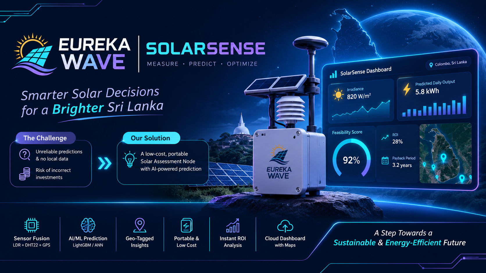

TEAM EUREKAWAVE · PITCH ARENA 2025
SolarSense
A portable, low-cost solar assessment concept that combines local environmental sensing, IoT, and machine learning to estimate solar generation and site feasibility.

Project overview
SolarSense explores a portable Solar Assessment Node for collecting location-specific environmental measurements and estimating solar energy potential. It was developed by Team EurekaWave at the University of Peradeniya and selected for the Pitch Arena 2025 semi-finals, among the top 45 teams from more than 120 participants.
Achievement: Pitch Arena 2025 semi-finalists
An exciting milestone for Team EurekaWave: SolarSense advanced to the semi-finals of Pitch Arena 2025, placing among the Top 45 teams out of more than 120 participants. Organized by the Faculty of Engineering, University of Ruhuna, as part of the REXTRO 25th Silver Jubilee Exhibition, Pitch Arena provided a platform to share creativity, innovation, and entrepreneurship.
Our team includes Kanchana Bandara ↗, Shanan Adams ↗, Eashan Sithum ↗, Hirushi Adikari ↗, and Sandali Uthpala.
Problem and proposed solution
Assessments based only on historical or satellite data may miss local microclimate differences, while dedicated measurement equipment can be costly. The proposed system combines on-site measurements with historical NASA POWER solar and weather data to estimate generation and help assess the feasibility of a solar installation.
System architecture
A multi-directional LDR array measures solar irradiance, a DHT22 captures temperature and humidity, and a NEO-6M GPS module provides location data. An ESP32 collects sensor readings and transmits them over Wi-Fi to a cloud database. LightGBM and artificial neural network models combine local measurements with historical data; a web dashboard presents readings, maps, energy estimates, and financial feasibility indicators.
Prototype notes
The project notes report a prototype measurement error below 8%, with a model trained on 34 years of NASA POWER data and reported metrics of RMSE 41.5 W/m² and MAPE 8.4%. These are figures from the supplied project materials.
The concept also considers return-on-investment and payback estimates, a portable power-bank-operated device, and a low-cost prototype with an estimated hardware cost of approximately LKR 11,500.
Future directions
Potential extensions described in the project notes include expanding a distributed irradiance dataset, adding satellite-based shading analysis, calibrating predictions with solar panel output, supporting LoRaWAN in remote locations, and developing a mobile application for field engineers.
Project presentation
SolarSense presentation (PDF) ↗Team EurekaWave
Meet the team behind SolarSense.